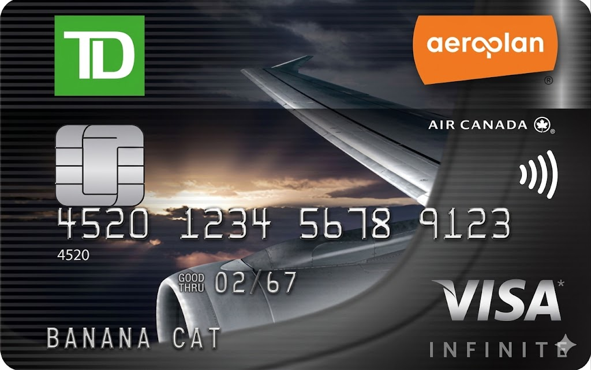
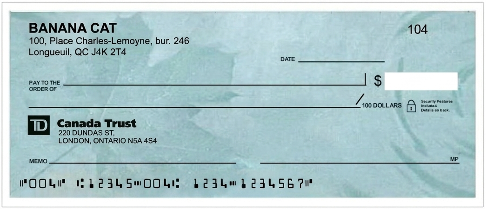

Banana Cat
Biography
Banana Cat is a highly motivated professional with extensive experience in looking confused, standing professionally in 360 degrees, and maintaining eye contact with destiny. Known for combining academic elegance with suspicious financial confidence, Banana Cat has built a reputation as a serious individual in unserious situations.
Throughout a distinguished career, Banana Cat has contributed to several groundbreaking fields, including advanced lounging, emergency snack detection, silent judgment, and international airport-window staring. Their work has been praised by absolutely no committee, but frequently misunderstood by everyone in the room.
Current research interests include the philosophy of naps, the economics of imaginary wealth, and whether a banana can truly become a cat, or if society simply refuses to ask the difficult questions.
Selected Achievements
- Survived multiple Mondays with minimal documentation.
- Maintained excellent posture while doing absolutely nothing.
- Recognized as “probably important” by airport security lighting.
- Invented a new productivity method: think about work until it becomes tomorrow.
Attached Records
Credit Card

Void Cheque
